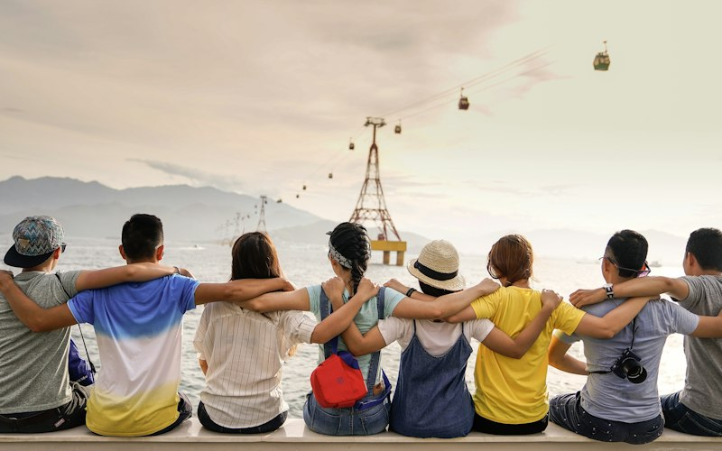

Somosconecta+.
Una fundación que lleva desde 1995 tendiendo puentes entre la tecnología y las personas que más lo necesitan.
Tecnología conpropósito social.
Somos una entidad sin ánimo de lucro dedicada a la educación, la inclusión digital y la acción social.
Trabajamos para que la tecnología sea una vía real de participación, aprendizaje y derechos — no una barrera más. Lo hacemos desde la proximidad: escuchando a las comunidades, diseñando con ellas y acompañándolas en el tiempo.
Nuestro trabajo se sostiene sobre tres verbos: participar, aprender y transformar.

Tres décadasconectando.
De una pequeña iniciativa a una red con presencia en cuatro comunidades autónomas y en proyectos europeos e iberoamericanos.
Nace conecta+
La fundación arranca con una idea sencilla: que el acceso a la tecnología no dependa del lugar donde naces ni de tus recursos.
Presencia en cuatro territorios
Abrimos sedes en Andalucía, Madrid, Cataluña y Galicia para trabajar cerca de cada comunidad.
Una red que cruza fronteras
Nos sumamos a ALL DIGITAL, a La Liga Iberoamericana y a proyectos Erasmus+ para ampliar nuestro impacto.
Certificados en lo que importa
Contamos con las normas ISO 9001, ISO 14001 e ISO 27001 y con el Esquema Nacional de Seguridad (ENS).
Siete líneas, un propósito
Seguimos trabajando para que nadie quede fuera del mundo digital.
Lo que nosmueve.
Participar
Impulsamos el liderazgo juvenil y el voluntariado como motor de comunidades activas.
Aprender
Formación TIC y digital al alcance de todas las edades y colectivos.
Transformar
Convertimos el conocimiento en oportunidades reales de inclusión y justicia educativa.
Proximidad
Diseñamos cada programa desde la escucha a las personas con las que trabajamos.
Transparencia
Rendimos cuentas de lo que hacemos y de cómo lo hacemos.
Calidad
Procesos certificados y seguros para cuidar a las personas y sus datos.
Las personasdetrás de la red.
Un equipo multidisciplinar que combina educación, tecnología y acción social.
Patronato
Define la estrategia de la fundación y vela por el cumplimiento de sus fines.
Conoce al patronato →Dirección
Coordina las sedes, los programas y las alianzas de la entidad.
Equipos técnicos
Educadores, formadores y técnicos que acompañan cada proyecto sobre el terreno.
Conoce al equipo →Mejoren red.
Nada de lo que hacemos sería posible sin las entidades, administraciones y empresas que caminan con nosotros.
- ALL DIGITAL — red europea de inclusión y competencias digitales
- La Liga Iberoamericana — cooperación con América Latina
- Programas Erasmus+ y fondos europeos
- Entidades del tercer sector y administraciones públicas
- Empresas comprometidas con la inclusión digital